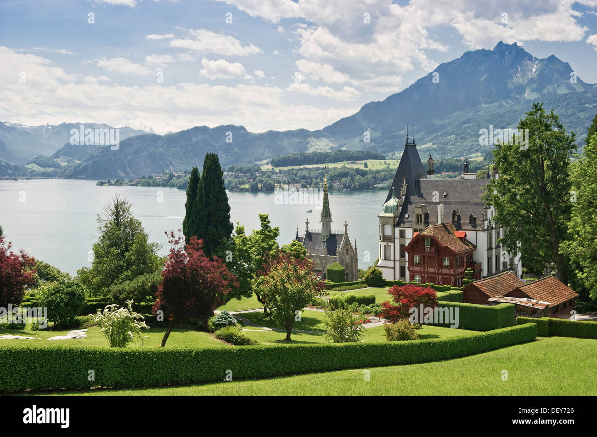

1. Vierwaldstättersee, Meggen
47.045861, 8.372866

Eredeti leírás: A nap Meggen mellett indul, a Luzerni tó egyik legszebb panorámájú partszakaszán, ahonnan jól látszik a Pilatus és a Rigi jellegzetes sziluettje. A tó partja itt már inkább villákkal, parkokkal és kikötőkkel szegélyezett, ami mutatja, mennyire kedvelt lakó és üdülőövezet. A Luzerni tavat gyakran nevezik Svájc bölcsőjének, mert a környező hegyek alatt alakult ki a középkori svájci szövetség. A víztükör sokszor teljesen nyugodt, ami tükörként veri vissza a hegyek vonalát, különösen kora reggel szép. A tómedencét a jégkorszak gleccserei vájták ki, ezért a partja több helyen hirtelen mélyül, a középső részeken pedig bőven száz méter feletti mélységeket mérnek. Meggen környékén a tavat követő út és vasút is végig a part közelében fut, így motorral is végig együtt mozogtok a víztükörrel.
Érdekességek:
Meggen és a közeli tóparti települések látványosan mutatják, hogyan épül rá a svájci tóvidék a panorámára. A part mentén sűrűn váltakoznak a kis öblök, stégek és parkos sétányok, ezért a hegyek és a víz viszonya folyamatosan új kompozíciót ad menet közben.
A tó kialakulása jégkorszaki eredetű, ezért a partvonal több helyen meredek, és a víz alatt gyorsan mélyülő mederformák jellemzőek. Ez a jégvájta geometriájú tókarakter adja a fjordszerű benyomást több szakaszon.
Ha reggel indultok, a szélcsendes idő gyakran tükörvizet hoz, ami nem csak látvány, hanem tájolás szempontból is érdekes, mert a hegyek kontúrjai élesen kirajzolódnak a vízen.